🌿 O que são os Manguezais e por que são tão importantes? Os manguezais são ecossistemas costeiros encontrados em áreas tropicais e subtropicais, onde a água doce dos rios se mistura com a água salgada do mar. Suas raízes aéreas e solos lamacentos funcionam como filtros naturais, retendo poluentes, reduzindo a força das marés e evitando a erosão das praias. Além disso, os mangues servem como berçários da vida marinha, oferecendo abrigo e alimento para diversas espécies de peixes, caranguejos, camarões, ostras e aves. Muitos desses animais são essenciais para a alimentação e a economia das comunidades que vivem próximas a essas áreas.

🐚 E em Pernambuco? Pernambuco é um dos estados com maior cobertura de manguezais no Nordeste, com cerca de 39 mil hectares. Regiões como a Ilha de Itamaracá, Recife, Igarassu, Goiana, Tamandaré e Rio Formoso concentram importantes áreas de mangue.
Esses ecossistemas protegem a costa de desastres naturais, sustentam a pesca artesanal e contribuem para o equilíbrio do clima ao armazenar carbono. No entanto, entre 2000 e 2020, o estado perdeu mais de 100 hectares de mangue, principalmente devido ao desmatamento, poluição e ocupações irregulares.
Manguezais em PE:
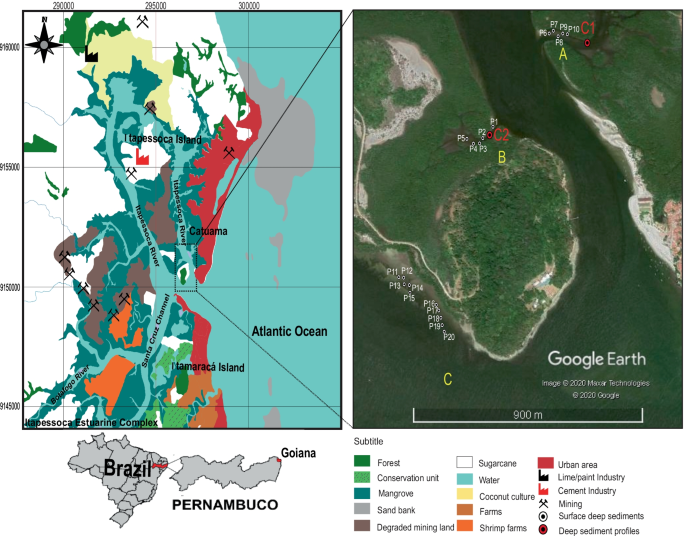Mangue de Itamaracá:
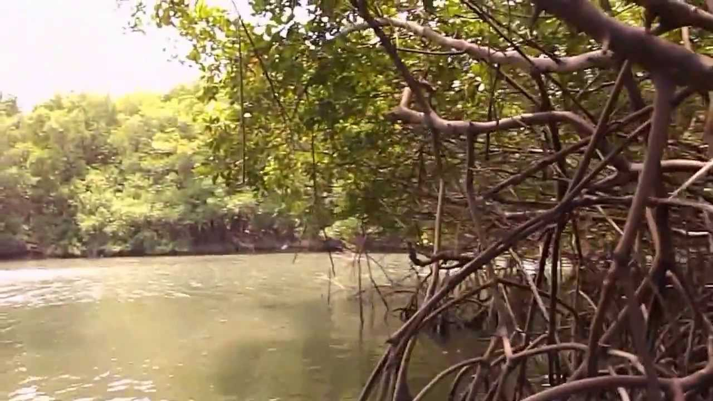 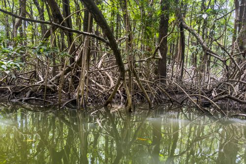🌳 Espécies de Mangue encontradas em Pernambuco Em nosso estado, encontramos três espécies principais de árvores típicas do manguezal:
Mangue-vermelho (Rhizophora mangle):
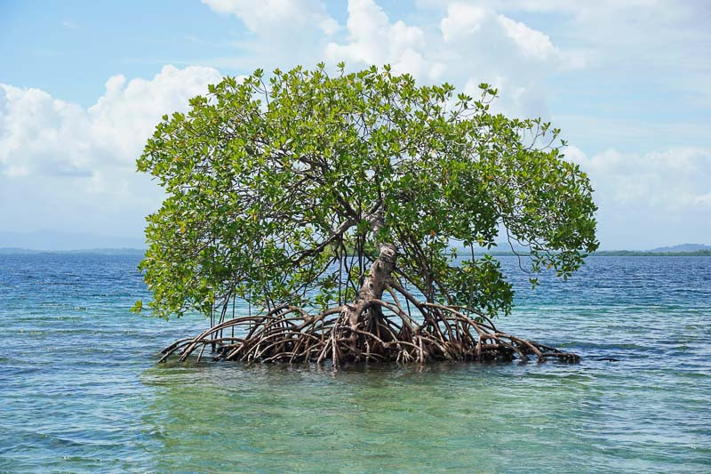Mangue-preto (Avicennia schaueriana):
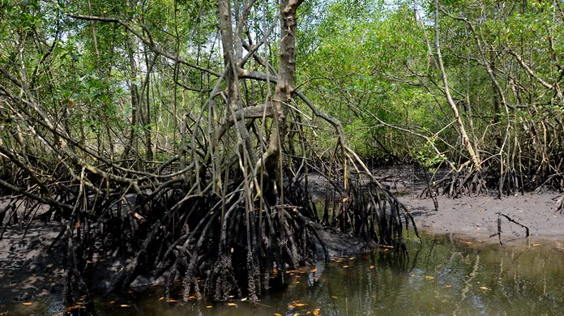Mangue-branco (Laguncularia racemosa):
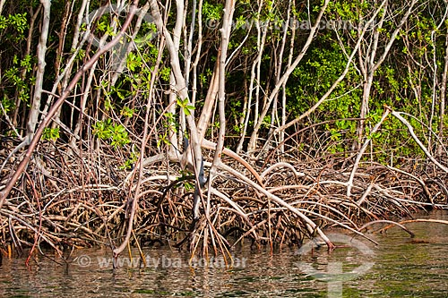Essas espécies são fundamentais para manter o solo estável, filtrar a água e abrigar a fauna. Cada uma ocupa uma faixa diferente do solo, dependendo da maré.
🦀 Animais que vivem no mangue de Pernambuco A fauna dos manguezais é riquíssima e abriga diversos animais, entre eles:
🐟 Peixes:
Cavalo-Marinho(Carro Chefe):

Robalo:
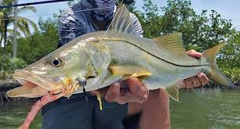Tainha:
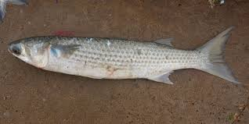Bagre:
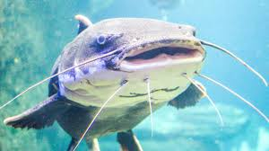Parati:
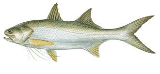Linguado:
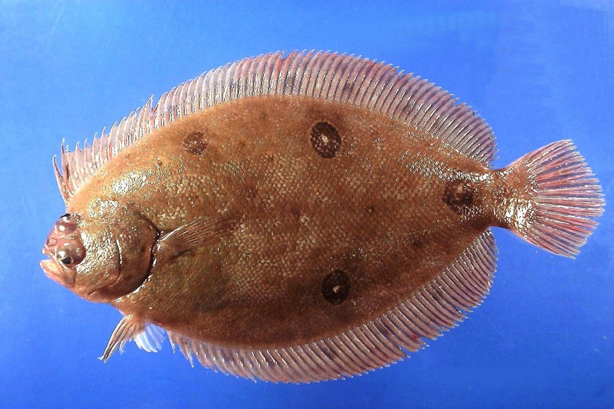🦐 Crustáceos
Caranguejo-uçá:

Siri-azul:
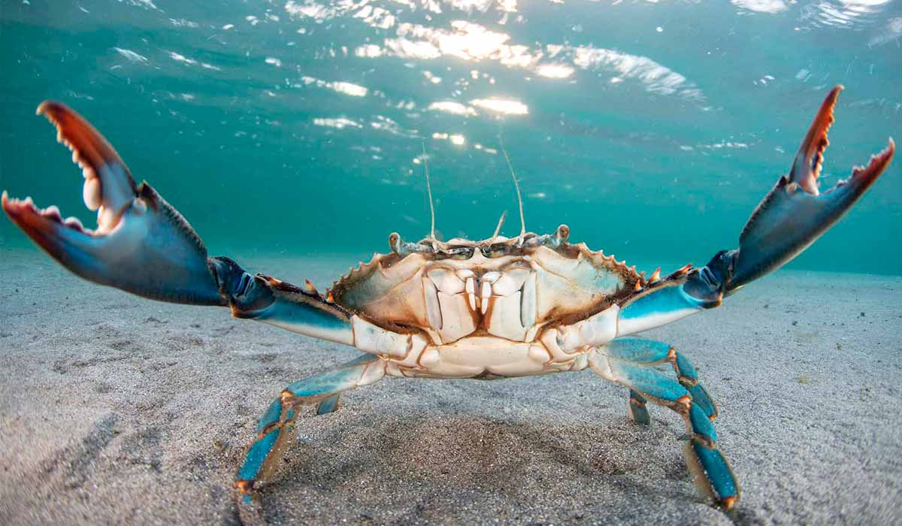Aratu
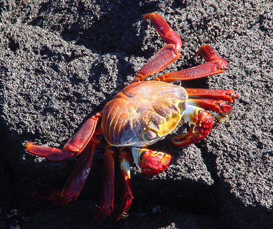🐚 Moluscos
Ostra:
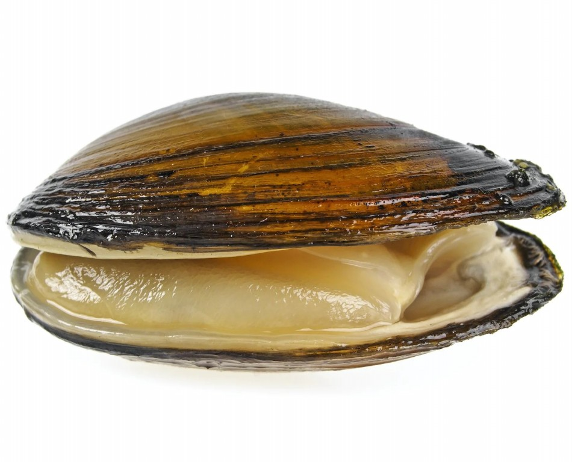Mexilhão:
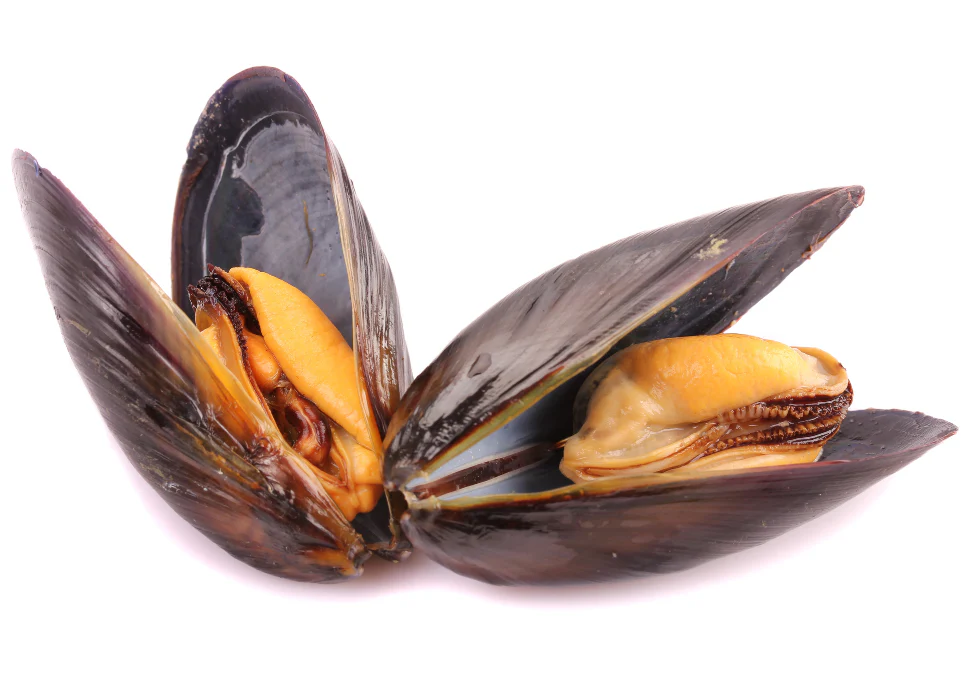Sururu:
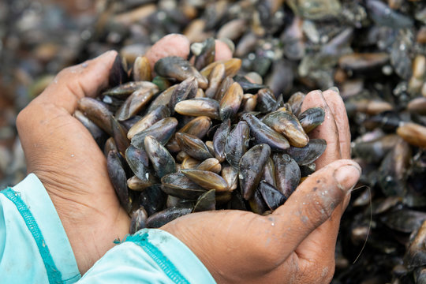🐊 Répteis e Anfíbios:
Jacaré-de-papo-amarelo:
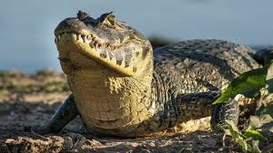Cobra-d'água:
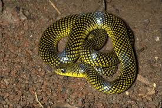Lagarto teiú:

Tartaruga-marinha:

🐒 Mamíferos
Capivara:
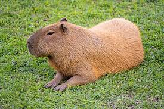Lontra:

Macaco-prego:
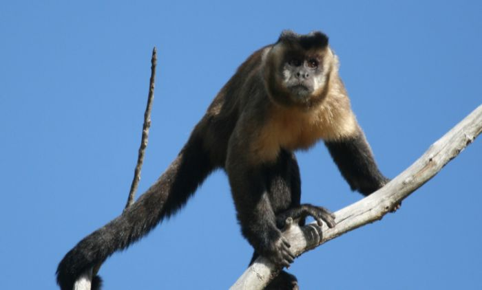Gato-do-mato:
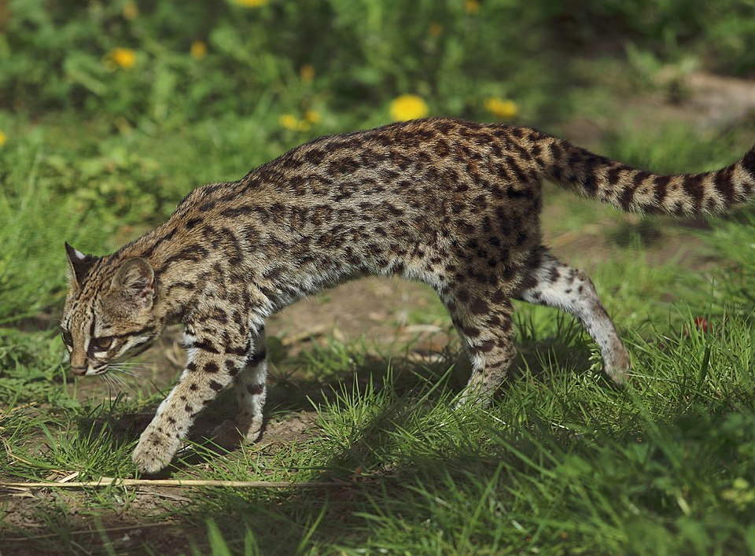🐦 Aves
Guará (vermelho vibrante):
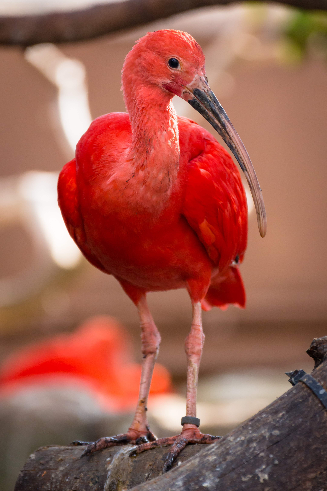Garça-branca:

Saracura-do-mangue:
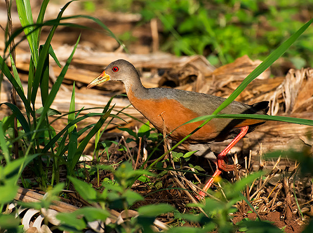Martim-pescador:
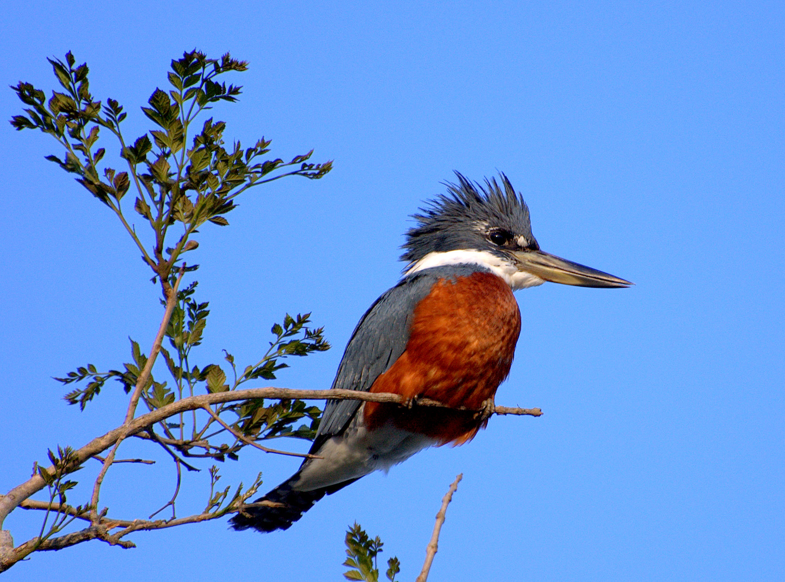Figuinha-do-mangue:
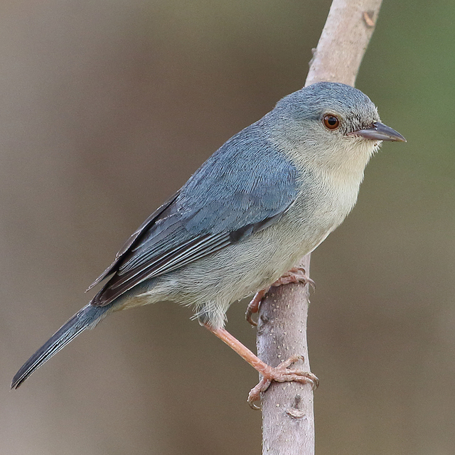Papa-lagarta-do-mangue:
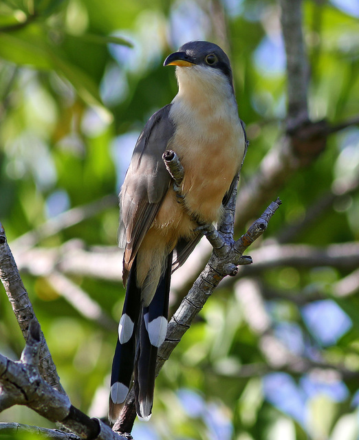✊ Movimentos de preservação Em Itamaracá, um grupo de estudantes e moradores realiza mutirões de limpeza, oficinas de educação ambiental e monitoramento voluntário dos manguezais. Eles ajudam a manter a área limpa e alertam sobre ocupações irregulares e lançamentos de esgoto.
Além disso, temos o ProManguezal, programa nacional criado em 2024 que visa proteger mais de 1,4 milhão de hectares de mangues no Brasil, com ações específicas também em Pernambuco, como reflorestamento e capacitação comunitária.
A sua conservação depende do conhecimento, da educação e do engajamento da sociedade.
mangue preservado:
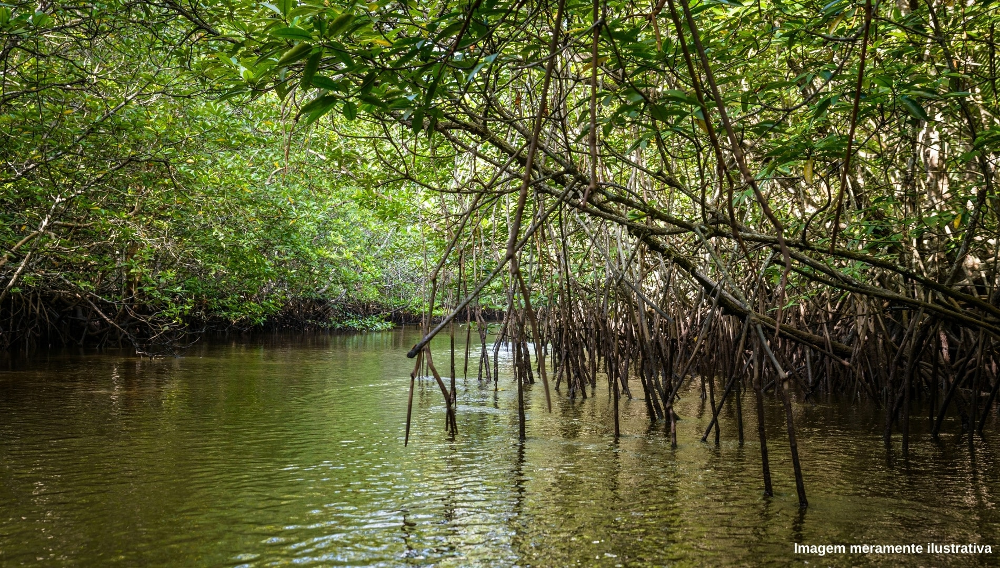📚 Fontes:
“O papel fundamental dos manguezais para os oceanos” – ETE José Humberto de Moura Cavalcanti, 2025
Instituto Árvore Água
FUNBIO
Programa ProManguezal
Wikimedia Commons(apenas imagens)